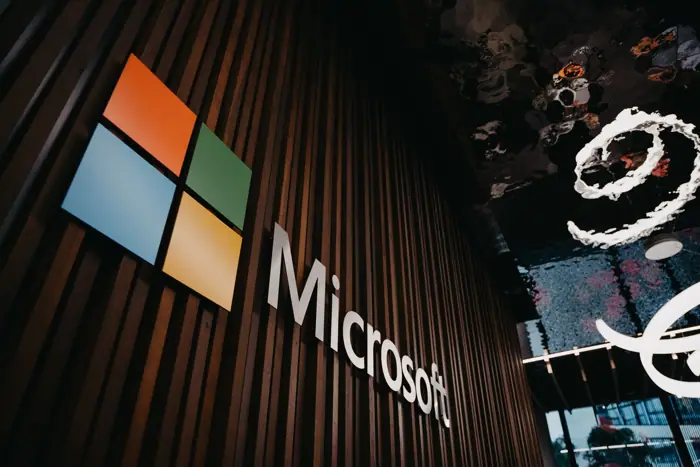

Technology · TechCrunch
Microsoft exec called AI scraping ‘the largest theft of labor in human history,' new unredacted filings reveal
Microsoft exec called AI scraping: TechCrunch

Introduction
Microsoft exec called AI scraping: TechCrunch
Background & context (from research brief)
# Microsoft exec called AI scraping ‘the largest theft of labor in human history,' new unredacted filings reveal
Why it matters
New technology reporting examines innovation trends and their practical impact on users and industry.
Source & further reading
This page aggregates the headline and context; the full original report is linked in the source panel below. Topic keywords: microsoft, exec, called, scraping, ‘the.